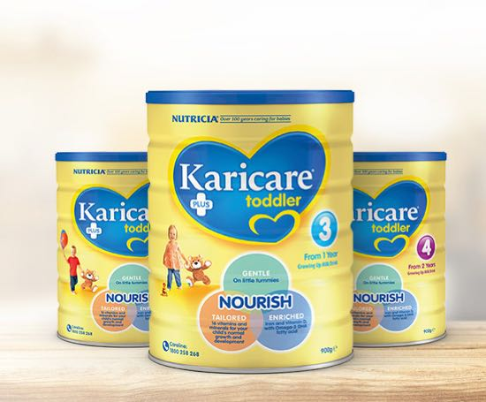
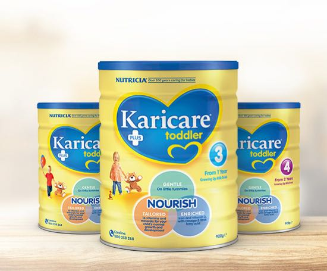

Karinourish
Providing tailored information about Karicare products and support for new parents
Providing tailored information about Karicare products and support for new parents
Danone Nutricia introduced a brand new look for their Karicare range of infant formulas to match the new demographic they were looking to target. This required the update of the Karinourish website to match.
The new art direction chosen for Karicare takes a much softer pallet. The yellows are much more welcoming with the strong blue acting as a nice accent. A secondary palette was also introduced as a set of callout colours. The new demographic of more everyday mothers lead to the choice of more adult fonts. in the end the mother is purchasing the formula, so the brand should feel within her age range.

This change also influenced the style of imagery. Instead of product images being deep etched and placed on coloured backgrounds like previously, the products now sit within realistic scenarios. The images of people also include soft, realistic backgrounds.
 

At the beginning of this project I spoke with the performance team at Profero to find out how visitors were accessing the site. Their data revealed that most people come in to the site through Google searches and land directly on product pages, skipping the homepage initially.

This insight led me to restructure the hierarchy of pages so that there was a clear introduction. This is important because it orients the user as they enter the site. There was also a focus on making sure all relevant information of a page was easily accessible.